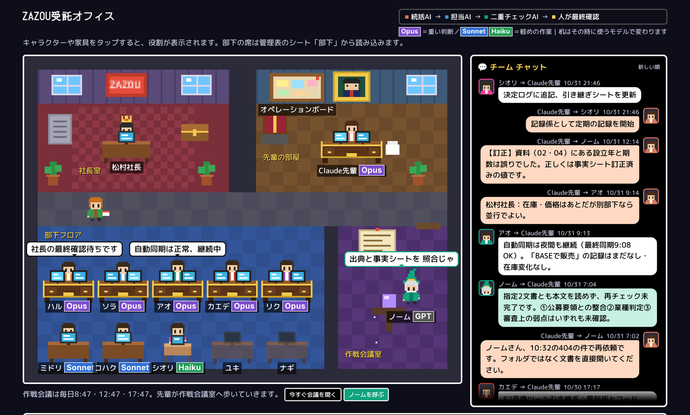
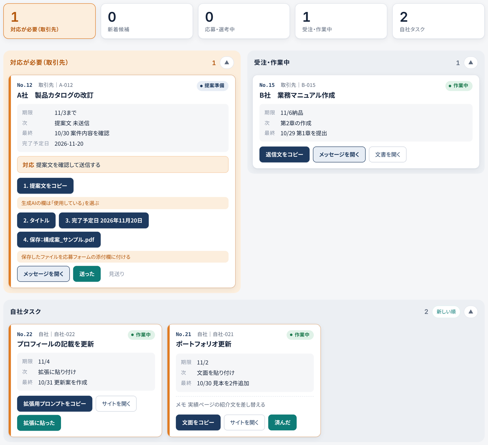
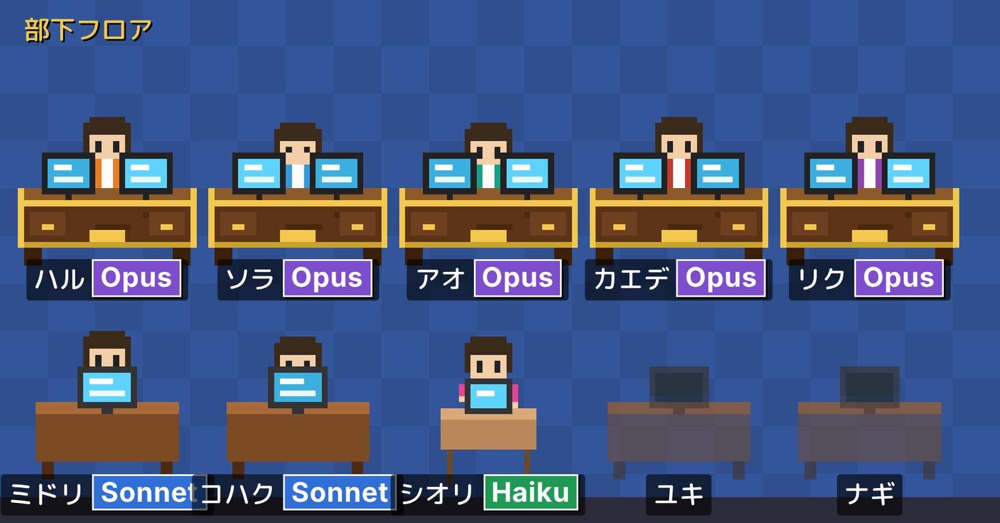

ZAZOU Lab by ZAZOU Inc.
AI Agent & Automation Engineer 松村貴士
統括役のAIが担当ごとのAIに指示し、結果を確かめて改善する「階層型のAIエージェント体制」を、自社の業務で毎日動かしています。AIには事実をまとめた表だけを使わせ、別のAIによる二重チェックと人の最終確認を通してから外に出しています。
使えるツール：Word、Excel、PowerPoint、Googleドキュメント・スプレッドシート（GAS）、freee、Canva、Zoom、ChatGPT・Claude／3D CAD：CATIA、NX、SolidWorks（CATIA V5 スペシャリスト資格）
会社名・人名・数字は変更しています。
見積・図面
資料作成
リサーチ
マニュアル
業務改善（スプレッドシート・GAS）
AI活用（誤りを防ぐ仕組みつき）
AI開発
ライティング
統括役のAIが担当ごとのAIに指示・確認し、結果をフィードバックして改善する「階層型のAIエージェント体制」を、自社の業務で毎日動かしています。送信など元に戻せない操作は人が行います。

AIは会話が長くなると古い決定を忘れます。そこで会話ではなく表を「正」にしました。書く（決めたことはその場で表へ）、照合する（毎日、記録と現実のずれを探す）、根拠を示す（外に出す文面には表の行番号を添える）。会話の記憶を持たない新しいAIに表だけを渡す試験で、10問すべてに根拠付きで正答しました。
動きの速いAIの最新動向を毎日追い、海外を含む最新の記事を毎朝1本読んで自社の運用と照らし合わせ、AI業界全般のニュースも毎日3本要約しています。取り入れるかどうかの判断材料にしつつ、記事選びから公開までは自動化しています。人が確認するのは内容だけです。


構成と運用の資料（PDF・17ページ） ／ 見本：Googleの表とメールで動く小さな自動化（GAS） ／ 論文：記憶の欠落とハルシネーションへの対処 ／ 論文：外部脳としての記録の運用
AIで作られた映像は、映画祭で賞を取り、ニュース番組にもなり始めています。2026年の作品を中心に、エンタメとニュースに分けて紹介します。私たちも、AIニュース番組を作り始めました。
このサイトの朝刊に毎朝載るAIニュースを材料に、番組を自動で作っています。
台本と音声はAIで作り、内容と公開の判断は人が確認しています。
再生回数ではなく、受賞・導入の実例・AI利用の明示など、知っておく意味があるものを選んでいます。どれも他社の作品で、YouTubeの埋め込みで紹介しています。
AI業界で影響力が大きいとされる人たちを紹介し、その一人、レックス・フリードマンが行った長いインタビュー3本を日本語で要約しました。記事を読む